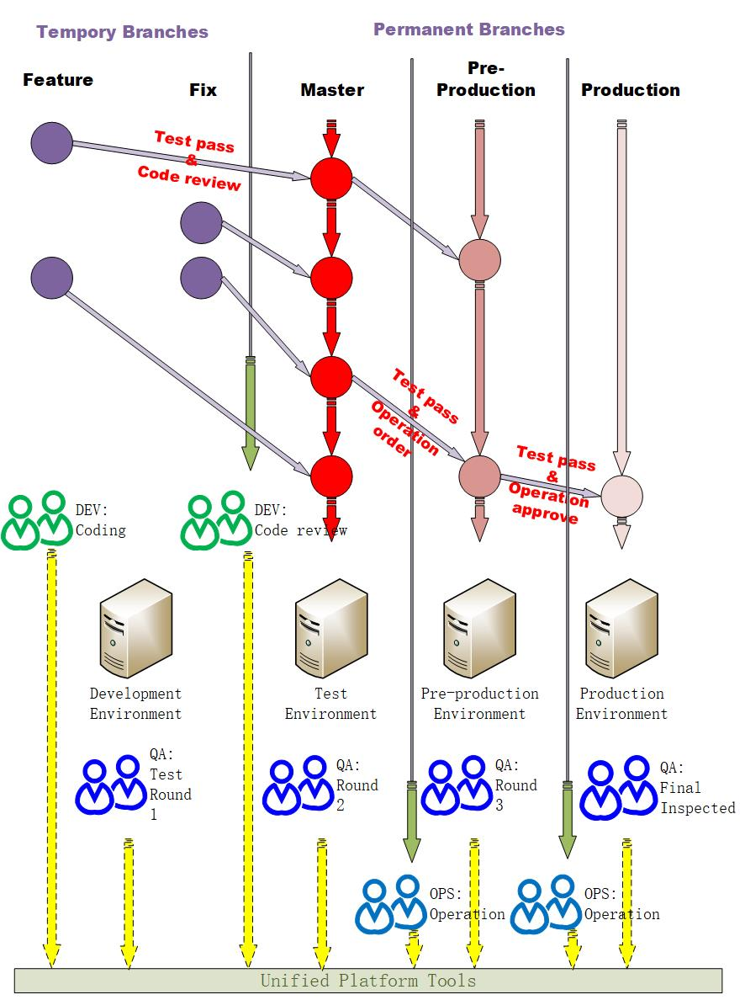

完善的上线流程是系统稳定的重要保证.
很多中小型的初创公司使用Gitlab管理自己的代码，想必大家在项目的开发上线中也踩过了很多坑。作为一个过来人选择了Gitlab官方推荐的带有环境分支Gitlab flow（Environment branches with GitLab flow）的最佳实践作为基础，为研发、质量保证和运维团队制定了统一的上线流程。

一般原则
- 分支分为永久分支和临时分支，都是在master分支以外建立。
- 永久分支不会被删除，包括开发的分支master，准生产分支pre-production，生产分支production。
- 临时分支分为功能分支Feature和修复分支Fix，在开发完成会被删除。功能分支必须有对应的需求，修复分支必须对应bug。禁止建立其他类型的分支。
- 临时分支的建立需从master分支创建，并在开发过程中实时合并master的变更。
- Feature和Fix在开发人员在开发环境部署测试，master在测试环境中部署测试，pre-production在仿真环境中部署测试，production在生产环境发布。
- 代码的变化，必须由”上游”向”下游”发展。Feature和Fix是master的”上游”，master是pre-production的上游，pre-production是production的”上游”。比如，生产环境出现了bug 或者要开发新的feature，这时就要建一个临时分支，开发完成把它合并到master，确认没有问题，再cherry-pick到pre-production，这一步也没有问题，才进入production。
- 质量保证团队成员在开发环境进行第1轮测试，在测试环境进行第2轮测试，在仿真环境进行第3轮测试，发布生产环境之后进行最终验收。
- 在代码从临时分支合并发布到master分支的时候必须通过质量保证的第1轮测试和顾问的code review，从master分支提交到pre-production的时候必须通过第2轮测试并在提交后通知运维团队上线日期并提交必要的运维工单，从pre-production提交到production必须通过第3轮测试和经过运维团队的批准，整个上线结果以质量保证最终验收为准。
- 任何不符合上述流程的代码分支创建和合并必须由项目负责人和项目顾问一起多数通过。任何不经过或者减少测试次数的发布必须通知研发 测试 产品团队负责人并经由多数通过。
特殊情况
- 并行进行的项目虽然提交发布时间上会有冲突，但是“代码通常不会冲突”，不同的feature需要同时修改同一段代码的情况概率很低，通常采用cherry-pick发布需要发布的部分即可 。
- 线上故障并且修复代码和已提交未上线的代码有“代码冲突”的，过批准可以从production分支创建临时分支，开发完成提交production之后必须马上提交master和pre-production流程与正常流程相同，但是其他非紧急需求必须为此让路，即故障和紧急需求提交合并到master或pre-production分支之前禁止此分支提交合并代码,合并完成紧急代码之后优先对紧急代码修复的功能进行测试。
- 紧急需求不能遵守一般开发流程的，开发团队原则上不接受或者必须延后开发上线时间，特别紧急情况经过并且开发代码和已提交未上线代码有“代码冲突”的，经批准按线上故障流程处理。
- 未列举情况原则上经过批准可以按线上故障流程处理。